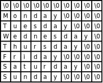

第 8 章 数组
1. 数组的基本概念
数组（Array）也是一种复合数据类型，它由一系列相同类型的元素（Element）组成。例如定义一个由 4 个 int 型元素组成的数组 count：
int count[4];
和结构体成员类似，数组 count 的 4 个元素的存储空间也是相邻的。结构体成员可以是基本数据类型，也可以是复合数据类型，数组中的元素也是如此。根据组合规则，我们可以定义一个由 4 个结构体元素组成的数组：
struct complex_struct {
double x, y;
} a[4];
也可以定义一个包含数组成员的结构体：
struct {
double x, y;
int count[4];
} s;
数组类型的长度应该用一个整数常量表达式来指定[16]。数组中的元素通过下标（或者叫索引，Index）来访问。例如前面定义的由 4 个 int 型元素组成的数组 count 图示如下：
图 8.1. 数组 count

[16] C99 的新特性允许在数组长度表达式中使用变量，称为变长数组（VLA，Variable Length Array），VLA 只能定义为局部变量而不能是全局变量，与 VLA 有关的语法规则比较复杂，而且很多编译器不支持这种新特性，不建议使用。
整个数组占了 4 个 int 型的存储单元，存储单元用小方框表示，里面的数字是存储在这个单元中的数据（假设都是 0），而框外面的数字是下标，这四个单元分别用 count[0]、count[1]、count[2]、count[3] 来访问。注意，在定义数组 int count[4]; 时，方括号（Bracket）中的数字4表示数组的长度，而在访问数组时，方括号中的数字表示访问数组的第几个元素。和我们平常数数不同，数组元素是从「第 0 个」开始数的，大多数编程语言都是这么规定的，所以计算机术语中有 Zeroth 这个词。这样规定使得访问数组元素非常方便，比如 count 数组中的每个元素占 4 个字节，则 count[i] 表示从数组开头跳过 4 * i 个字节之后的那个存储单元。这种数组下标的表达式不仅可以表示存储单元中的值，也可以表示存储单元本身，也就是说可以做左值，因此以下语句都是正确的：
count[0] = 7;
count[1] = count[0] * 2;
++count[2];
到目前为止我们学习了五种后缀运算符：后缀 ++、后缀 --、结构体取成员 .、数组取下标 []、函数调用 ()。还学习了五种单目运算符（或者叫前缀运算符）：前缀 ++、前缀 --、正号 +、负号 -、逻辑非 !。在 C 语言中后缀运算符的优先级最高，单目运算符的优先级仅次于后缀运算符，比其它运算符的优先级都高，所以上面举例的 ++count[2] 应该看作对 count[2] 做前缀 ++ 运算。
数组下标也可以是表达式，但表达式的值必须是整型的。例如：
int i = 10;
count[i] = count[i+1];
使用数组下标不能超出数组的长度范围，这一点在使用变量做数组下标时尤其要注意。C 编译器并不检查 count[-1] 或是 count[100] 这样的访问越界错误，编译时能顺利通过，所以属于运行时错误[17]。但有时候这种错误很隐蔽，发生访问越界时程序可能并不会立即崩溃，而执行到后面某个正确的语句时却有可能突然崩溃（在第 10 章「gdb」第 4 节「段错误」我们会看到这样的例子）。所以从一开始写代码时就要小心避免出问题，事后依靠调试来解决问题的成本是很高的。
[17] 你可能会想为什么编译器对这么明显的错误都视而不见？理由一，这种错误并不总是显而易见的，在第 23 章「指针」第 1 节「指针的基本概念」会讲到通过指针而不是数组名来访问数组的情况，指针指向数组中的什么位置只有运行时才知道，编译时无法检查是否越界，而运行时每次访问数组元素都检查越界会严重影响性能，所以干脆不检查了；理由二，C99 Rationale 指出 C 语言的设计精神是：相信每个 C 程序员都是高手，不要阻止程序员去干他们需要干的事，高手们使用
count[-1]这种技巧其实并不少见，不应该当作错误。
数组也可以像结构体一样初始化，未赋初值的元素也是用 0 来初始化，例如：
int count[4] = { 3, 2, };
则 count[0] 等于 3， count[1] 等于 2，后面两个元素等于 0。如果定义数组的同时初始化它，也可以不指定数组的长度，例如：
int count[] = { 3, 2, 1, };
编译器会根据 Initializer 有三个元素确定数组的长度为 3。利用 C99 的新特性也可以做 Memberwise Initialization：
int count[4] = { [2] = 3 };
下面举一个完整的例子：
例 8.1. 定义和访问数组
#include <stdio.h>
int main(void)
{
int count[4] = { 3, 2, }, i;
for (i = 0; i < 4; i++)
printf("count[%d]=%d\n", i, count[i]);
return 0;
}
这个例子通过循环把数组中的每个元素依次访问一遍，在计算机术语中称为遍历（Traversal）。注意控制表达式 i < 4，如果写成 i <= 4 就错了，因为 count[4] 是访问越界。
数组和结构体虽然有很多相似之处，但也有一个显著的不同：数组不能相互赋值或初始化。例如这样是错的：
int a[5] = { 4, 3, 2, 1 };
int b[5] = a;
相互赋值也是错的：
a = b;
既然不能相互赋值，也就不能用数组类型作为函数的参数或返回值。如果写出这样的函数定义：
void foo(int a[5])
{
...
}
然后这样调用：
int array[5] = {0};
foo(array);
编译器也不会报错，但这样写并不是传一个数组类型参数的意思。对于数组类型有一条特殊规则：数组类型做右值使用时，自动转换成指向数组首元素的指针。所以上面的函数调用其实是传一个指针类型的参数，而不是数组类型的参数。接下来的几章里有的函数需要访问数组，我们就把数组定义为全局变量给函数访问，等以后讲了指针再使用传参的办法。这也解释了为什么数组类型不能相互赋值或初始化，例如上面提到的 a = b 这个表达式，a 和 b 都是数组类型的变量，但是 b 做右值使用，自动转换成指针类型，而左边仍然是数组类型，所以编译器报的错是 error: incompatible types in assignment。
习题
- 编写一个程序，定义两个类型和长度都相同的数组，将其中一个数组的所有元素拷贝给另一个。既然数组不能直接赋值，想想应该怎么实现。
2. 数组应用实例：统计随机数
本节通过一个实例介绍使用数组的一些基本模式。问题是这样的：首先生成一列 0 ~ 9 的随机数保存在数组中，然后统计其中每个数字出现的次数并打印，检查这些数字的随机性如何。随机数在某些场合（例如游戏程序）是非常有用的，但是用计算机生成完全随机的数却不是那么容易。计算机执行每一条指令的结果都是确定的，没有一条指令产生的是随机数，调用 C 标准库得到的随机数其实是伪随机（Pseudorandom）数，是用数学公式算出来的确定的数，只不过这些数看起来很随机，并且从统计意义上也很接近均匀分布（Uniform Distribution）的随机数。
C 标准库中生成伪随机数的是 rand 函数，使用这个函数需要包含头文件 stdlib.h，它没有参数，返回值是一个介于 0 和 RAND_MAX 之间的接近均匀分布的整数。RAND_MAX 是该头文件中定义的一个常量，在不同的平台上有不同的取值，但可以肯定它是一个非常大的整数。通常我们用到的随机数是限定在某个范围之中的，例如 0 ~ 9，而不是 0 ~ RAND_MAX，我们可以用 % 运算符将 rand 函数的返回值处理一下：
int x = rand() % 10;
完整的程序如下：
例 8.2. 生成并打印随机数
#include <stdio.h>
#include <stdlib.h>
#define N 20
int a[N];
void gen_random(int upper_bound)
{
int i;
for (i = 0; i < N; i++)
a[i] = rand() % upper_bound;
}
void print_random()
{
int i;
for (i = 0; i < N; i++)
printf("%d ", a[i]);
printf("\n");
}
int main(void)
{
gen_random(10);
print_random();
return 0;
}
这里介绍一种新的语法：用 #define 定义一个常量。实际上编译器的工作分为两个阶段，先是预处理（Preprocess）阶段，然后才是编译阶段，用 gcc 的 -E 选项可以看到预处理之后、编译之前的程序，例如：
$ gcc -E main.c
...（这里省略了很多行 stdio.h 和 stdlib.h 的代码）
int a[20];
void gen_random(int upper_bound)
{
int i;
for (i = 0; i < 20; i++)
a[i] = rand() % upper_bound;
}
void print_random()
{
int i;
for (i = 0; i < 20; i++)
printf("%d ", a[i]);
printf("\n");
}
int main(void)
{
gen_random(10);
print_random();
return 0;
}
可见在这里预处理器做了两件事情，一是把头文件 stdio.h 和 stdlib.h 在代码中展开，二是把 #define 定义的标识符 N 替换成它的定义 20（在代码中做了三处替换，分别位于数组的定义中和两个函数中）。像 #include 和 #define 这种以 # 号开头的行称为预处理指示（Preprocessing Directive），我们将在第 21 章「预处理」学习其它预处理指示。此外，用 cpp main.c 命令也可以达到同样的效果，只做预处理而不编译，cpp 表示 C preprocessor。
那么用 #define 定义的常量和上一章「结构体」第 3 节「数据类型标志」讲的枚举常量有什么区别呢？首先，define 不仅用于定义常量，也可以定义更复杂的语法结构，称为宏（Macro）定义。其次，define 定义是在预处理阶段处理的，而枚举是在编译阶段处理的。试试看把上一章「结构体」第 3 节「数据类型标志」习题 2 的程序改成下面这样是什么结果。
#include <stdio.h>
#define RECTANGULAR 1
#define POLAR 2
int main(void)
{
int RECTANGULAR;
printf("%d %d\n", RECTANGULAR, POLAR);
return 0;
}
注意，虽然 include 和 define 在预处理指示中有特殊含义，但它们并不是 C 语言的关键字，换句话说，它们也可以用作标识符，例如声明 int include; 或者 void define(int);。在预处理阶段，如果一行以 # 号开头，后面跟 include 或 define，预处理器就认为这是一条预处理指示，除此之外出现在其它地方的 include 或 define 预处理器并不关心，只是当成普通标识符交给编译阶段去处理。
回到随机数这个程序继续讨论，一开始为了便于分析和调试，我们取小一点的数组长度，只生成 20 个随机数，这个程序的运行结果为：
3 6 7 5 3 5 6 2 9 1 2 7 0 9 3 6 0 6 2 6
看起来很随机了。但随机性如何呢？分布得均匀吗？所谓均匀分布，应该每个数出现的概率是一样的。在上面的 20 个结果中，6 出现了 5 次，而 4 和 8 一次也没出现过。但这说明不了什么问题，毕竟我们的样本太少了，才 20 个数，如果样本足够多，比如说 100000 个数，统计一下其中每个数字出现的次数也许能说明问题。但总不能把 100000 个数都打印出来然后挨个去数吧？我们需要写一个函数统计每个数字出现的次数。完整的程序如下：
例 8.3. 统计随机数的分布
#include <stdio.h>
#include <stdlib.h>
#define N 100000
int a[N];
void gen_random(int upper_bound)
{
int i;
for (i = 0; i < N; i++)
a[i] = rand() % upper_bound;
}
int howmany(int value)
{
int count = 0, i;
for (i = 0; i < N; i++)
if (a[i] == value)
++count;
return count;
}
int main(void)
{
int i;
gen_random(10);
printf("value\thow many\n");
for (i = 0; i < 10; i++)
printf("%d\t%d\n", i, howmany(i));
return 0;
}
我们只要把 #define N 的值改为 100000，就相当于把整个程序中所有用到 N 的地方都改为 100000 了。如果我们不这么写，而是在定义数组时直接写成 int a[20];，在每个循环中也直接使用 20 这个值，这称为硬编码（Hard coding）。如果原来的代码是硬编码的，那么一旦需要把 20 改成 100000 就非常麻烦，你需要找遍整个代码，判断哪些 20 表示这个数组的长度就改为 100000，哪些 20 表示别的数量则不做改动，如果代码很长，这是很容易出错的。所以，写代码时应尽可能避免硬编码，这其实也是一个「提取公因式」的过程，和上一章「结构体」第 2 节「数据抽象」讲的抽象具有相同的作用，就是避免一个地方的改动波及到大的范围。这个程序的运行结果如下：
$ ./a.out
value how many
0 10130
1 10072
2 9990
3 9842
4 10174
5 9930
6 10059
7 9954
8 9891
9 9958
各数字出现的次数都在 10000 次左右，可见是比较均匀的。
习题
- 用
rand函数生成 [10, 20] 之间的随机整数，表达式应该怎么写？
3. 数组应用实例：直方图
继续上面的例子。我们统计一列 0 ~ 9 的随机数，打印每个数字出现的次数，像这样的统计结果称为直方图（Histogram）。有时候我们并不只是想打印，更想把统计结果保存下来以便做后续处理。我们可以把程序改成这样：
int main(void)
{
int howmanyones = howmany(1);
int howmanytwos = howmany(2);
...
}
这显然太繁琐了。要是这样的随机数有 100 个呢？显然这里用数组最合适不过了：
int main(void)
{
int i, histogram[10];
gen_random(10);
for (i = 0; i < 10; i++)
histogram[i] = howmany(i);
...
}
有意思的是，这里的循环变量 i 有两个作用，一是作为参数传给 howmany 函数，统计数字 i 出现的次数，二是做 histogram 的下标，也就是「把数字 i 出现的次数保存在数组 histogram 的第 i 个位置」。
尽管上面的方法可以准确地得到统计结果，但是效率很低，这 100000 个随机数需要从头到尾检查十遍，每一遍检查只统计一种数字的出现次数。其实可以把 histogram 中的元素当作累加器来用，这些随机数只需要从头到尾检查一遍（Single Pass）就可以得出结果：
int main(void)
{
int i, histogram[10] = {0};
gen_random(10);
for (i = 0; i < N; i++)
histogram[a[i]]++;
...
}
首先把 histogram 的所有元素初始化为 0，注意使用局部变量的值之前一定要初始化，否则值是不确定的。接下来的代码很有意思，在每次循环中，a[i] 就是出现的随机数，而这个随机数同时也是 histogram 的下标，这个随机数每出现一次就把 histogram 中相应的元素加 1。
把上面的程序运行几遍，你就会发现每次产生的随机数都是一样的，不仅如此，在别的计算机上运行该程序产生的随机数很可能也是这样的。这正说明了这些数是伪随机数，是用一套确定的公式基于某个初值算出来的，只要初值相同，随后的整个数列就都相同。实际应用中不可能使用每次都一样的随机数，例如开发一个麻将游戏，每次运行这个游戏摸到的牌不应该是一样的。因此，C 标准库允许我们自己指定一个初值，然后在此基础上生成伪随机数，这个初值称为 Seed，可以用 srand 函数指定 Seed。通常我们通过别的途径得到一个不确定的数作为 Seed，例如调用 time 函数得到当前系统时间距 1970 年 1 月 1 日 00:00:00 的秒数[18]，然后传给 srand：
srand(time(NULL));
然后再调用 rand，得到的随机数就和刚才完全不同了。调用 time 函数需要包含头文件 time.h，这里的 NULL 表示空指针，到第 23 章「指针」第 1 节「指针的基本概念」再详细解释。
[18] 各种派生自 UNIX 的系统都把这个时刻称为 Epoch，因为 UNIX 系统最早发明于 1969 年。
习题
-
补完本节直方图程序的
main函数，以可视化的形式打印直方图。例如上一节统计 20 个随机数的结果是：0 1 2 3 4 5 6 7 8 9 * * * * * * * * * * * * * * * * * * * * -
定义一个数组，编程打印它的全排列。比如定义：
#define N 3 int a[N] = { 1, 2, 3 };则运行结果是：
$ ./a.out 1 2 3 1 3 2 2 1 3 2 3 1 3 2 1 3 1 2 1 2 3程序的主要思路是：
- 把第 1 个数换到最前面来（本来就在最前面），准备打印 1xx，再对后两个数 2 和 3 做全排列。
- 把第 2 个数换到最前面来，准备打印 2xx，再对后两个数 1 和 3 做全排列。
- 把第 3 个数换到最前面来，准备打印 3xx，再对后两个数 1 和 2 做全排列。
可见这是一个递归的过程，把对整个序列做全排列的问题归结为对它的子序列做全排列的问题，注意我没有描述 Base Case 怎么处理，你需要自己想。你的程序要具有通用性，如果改变了
N和数组a的定义（比如改成 4 个数的数组），其它代码不需要修改就可以做 4 个数的全排列（共 24 种排列）。完成了上述要求之后再考虑第二个问题：如果再定义一个常量
M表示从N个数中取几个数做排列（N == M时表示全排列），原来的程序应该怎么改？最后再考虑第三个问题：如果要求从
N个数中取M个数做组合而不是做排列，就不能用原来的递归过程了，想想组合的递归过程应该怎么描述，编程实现它。
4. 字符串
之前我一直对字符串避而不谈，不做详细解释，现在已经具备了必要的基础知识，可以深入讨论一下字符串了。字符串可以看作一个数组，它的每个元素是字符型的，例如字符串 "Hello, world.\n" 图示如下：
图 8.2. 字符串

注意每个字符**串**末尾都有一个字符 '\0' 做结束符，这里的 \0 是 ASCII 码的八进制表示，也就是 ASCII 码为 0 的 Null 字符，在 C 语言中这种字符串也称为「以零结尾的字符串」（Null-terminated String）。数组元素可以通过数组名加下标的方式访问，而字符串字面值也可以像数组名一样使用，可以加下标访问其中的字符：
char c = "Hello, world.\n"[0];
但是通过下标修改其中的字符却是不允许的：
"Hello, world.\n"[0] = 'A';
这行代码会产生编译错误，说字符串字面值是只读的，不允许修改。字符串字面值还有一点和数组名类似，做右值使用时自动转换成指向首元素的指针，在第 3 章「简单函数」第 3 节「形参和实参」我们看到 printf 原型的第一个参数是指针类型，而 printf("hello world") 其实就是传一个指针参数给 printf。
前面讲过数组可以像结构体一样初始化，如果是字符数组，也可以用一个字符串字面值来初始化：
char str[10] = "Hello";
相当于：
char str[10] = { 'H', 'e', 'l', 'l', 'o', '\0' };
str 的后四个元素没有指定，自动初始化为 '\0'，即 Null 字符。注意，虽然字符串字面值 "Hello" 是只读的，但用它初始化的数组 str 却是可读可写的。数组 str 中保存了一串字符，以 '\0' 结尾，也可以叫字符串。在本书中只要是以 Null 字符结尾的一串字符都叫字符串，不管是像 str 这样的数组，还是像 "Hello" 这样的字符串字面值。
如果用于初始化的字符串字面值比数组还长，比如：
char str[10] = "Hello, world.\n";
则数组 str 只包含字符串的前 10 个字符，不包含 Null 字符，这种情况编译器会给出警告。如果要用一个字符串字面值准确地初始化一个字符数组，最好的办法是不指定数组的长度，让编译器自己计算：
char str[] = "Hello, world.\n";
字符串字面值的长度包括 Null 字符在内一共 15 个字符，编译器会确定数组 str 的长度为 15。
有一种情况需要特别注意，如果用于初始化的字符串字面值比数组刚好长出一个 Null 字符的长度，比如：
char str[14] = "Hello, world.\n";
则数组 str 不包含 Null 字符，并且编译器不会给出警告，C99 Rationale 说这样规定是为程序员方便，以前的很多编译器都是这样实现的，不管它有理没理，C 标准既然这么规定了我们也没办法，只能自己小心了。
补充一点，printf 函数的格式化字符串中可以用 %s 表示字符串的占位符。在学字符数组以前，我们用 %s 没什么意义，因为
printf("string: %s\n", "Hello");
还不如写成
printf("string: Hello\n");
但现在字符串可以保存在一个数组里面，用 %s 来打印就很有必要了：
printf("string: %s\n", str);
printf 会从数组 str 的开头一直打印到 Null 字符为止，Null 字符本身是 Non-printable 字符，不打印。这其实是一个危险的信号：如果数组 str 中没有 Null 字符，那么 printf 函数就会访问数组越界，后果可能会很诡异：有时候打印出乱码，有时候看起来没错误，有时候引起程序崩溃。
5. 多维数组
就像结构体可以嵌套一样，数组也可以嵌套，一个数组的元素可以是另外一个数组，这样就构成了多维数组（Multi-dimensional Array）。例如定义并初始化一个二维数组：
int a[3][2] = { 1, 2, 3, 4, 5 };
数组 a 有 3 个元素，a[0]、a[1]、a[2]。每个元素也是一个数组，例如 a[0] 是一个数组，它有两个元素 a[0][0]、a[0][1]，这两个元素的类型是 int，值分别是 1、2，同理，数组 a[1] 的两个元素是 3、4，数组 a[2]的两个元素是 5、0。如下图所示：
图 8.3. 多维数组

从概念模型上看，这个二维数组是三行两列的表格，元素的两个下标分别是行号和列号。从物理模型上看，这六个元素在存储器中仍然是连续存储的，就像一维数组一样，相当于把概念模型的表格一行一行接起来拼成一串，C 语言的这种存储方式称为 Row-major 方式，而有些编程语言（例如 FORTRAN）是把概念模型的表格一列一列接起来拼成一串存储的，称为 Column-major 方式。
多维数组也可以像嵌套结构体一样用嵌套 Initializer 初始化，例如上面的二维数组也可以这样初始化：
int a[][2] = { { 1, 2 },
{ 3, 4 },
{ 5, } };
注意，除了第一维的长度可以由编译器自动计算而不需要指定，其余各维都必须明确指定长度。利用 C99 的新特性也可以做 Memberwise Initialization，例如：
int a[3][2] = { [0][1] = 9, [2][1] = 8 };
结构体和数组嵌套的情况也可以做 Memberwise Initialization，例如：
struct complex_struct {
double x, y;
} a[4] = { [0].x = 8.0 };
struct {
double x, y;
int count[4];
} s = { .count[2] = 9 };
如果是多维字符数组，也可以嵌套使用字符串字面值做 Initializer，例如：
例 8.4. 多维字符数组
#include <stdio.h>
void print_day(int day)
{
char days[8][10] = { "", "Monday", "Tuesday",
"Wednesday", "Thursday", "Friday",
"Saturday", "Sunday" };
if (day < 1 || day > 7)
printf("Illegal day number!\n");
printf("%s\n", days[day]);
}
int main(void)
{
print_day(2);
return 0;
}
图 8.4. 多维字符数组

这个程序中定义了一个多维字符数组 char days[8][10];，为了使 1 ~ 7 刚好映射到 days[1]~days[7]，我们把 days[0] 空出来不用，所以第一维的长度是 8，为了使最长的字符串 "Wednesday" 能够保存到一行，末尾还能多出一个 Null 字符的位置，所以第二维的长度是 10。
这个程序和第 4 章「分支语句」例 4.1「switch 语句」的功能其实是一样的，但是代码简洁多了。简洁的代码不仅可读性强，而且维护成本也低，像第 4 章「分支语句」例 4.1「switch 语句」那样一堆 case、printf 和 break，如果漏写一个 break 就要出 Bug。这个程序之所以简洁，是因为用数据代替了代码。具体来说，通过下标访问字符串组成的数组可以代替一堆 case 分支判断，这样就可以把每个 case 里重复的代码（printf 调用）提取出来，从而又一次达到了「提取公因式」的效果。这种方法称为数据驱动的编程（Data-driven Programming），写代码最重要的是选择正确的数据结构来组织信息，设计控制流程和算法尚在其次，只要数据结构选择得正确，其它代码自然而然就变得容易理解和维护了，就像这里的 printf 自然而然就被提取出来了。人月神话中说过：Show me your flowcharts and conceal your tables, and I shall continue to be mystified. Show me your tables, and I won't usually need your flowcharts; they'll be obvious.
最后，综合本章的知识，我们来写一个最简单的小游戏——剪刀石头布：
例 8.5. 剪刀石头布
#include <stdio.h>
#include <stdlib.h>
#include <time.h>
int main(void)
{
char gesture[3][10] = { "scissor", "stone", "cloth" };
int man, computer, result, ret;
srand(time(NULL));
while (1) {
computer = rand() % 3;
printf("\nInput your gesture (0-scissor 1-stone 2-cloth):\n");
ret = scanf("%d", &man);
if (ret != 1 || man < 0 || man > 2) {
printf("Invalid input! Please input 0, 1 or 2.\n");
continue;
}
printf("Your gesture: %s\tComputer's gesture: %s\n",
gesture[man], gesture[computer]);
result = (man - computer + 4) % 3 - 1;
if (result > 0)
printf("You win!\n");
else if (result == 0)
printf("Draw!\n");
else
printf("You lose!\n");
}
return 0;
}
0、1、2 三个整数分别是「剪刀、石头、布」在程序中的内部表示，用户也要求输入 0、1 或 2，然后和计算机随机生成的 0、1 或 2 比胜负。这个程序的主体是一个死循环，需要按 Ctrl-C 退出程序。以往我们写的程序都只有打印输出，在这个程序中我们第一次碰到处理用户输入的情况。我们简单介绍一下 scanf 函数的用法，到第 25 章「C 标准库」第 2.9 节「格式化 I/O 函数」再详细解释。scanf("%d", &man) 这个调用的功能是等待用户输入一个整数并回车，这个整数会被 scanf 函数保存在 man 这个整型变量里。如果用户输入合法（输入的确实是数字而不是别的字符），则 scanf 函数返回 1，表示成功读入一个数据。但即使用户输入的是整数，我们还需要进一步检查是不是在 0 ~ 2 的范围内，写程序时对用户输入要格外小心，用户有可能输入任何数据，他才不管游戏规则是什么。
和 printf 类似，scanf 也可以用 %c、%f、%s 等转换说明。如果在传给 scanf 的第一个参数中用 %d、%f或 %c 表示读入一个整数、浮点数或字符，则第二个参数的形式应该是 & 运算符加相应类型的变量名，表示读进来的数保存到这个变量中，& 运算符的作用是得到一个指针类型，到第 23 章「指针」第 1 节「指针的基本概念」再详细解释；如果在第一个参数中用 %s 读入一个字符串，则第二个参数应该是数组名，数组名前面不加 &，因为数组类型做右值时自动转换成指针类型，在第 10 章「gdb」第 2 节「断点」有 scanf 读入字符串的例子。
留给读者思考的问题是：(man - computer + 4) % 3 - 1 这个神奇的表达式是如何比较出 0、1、2 这三个数字在「剪刀石头布」意义上的大小的？